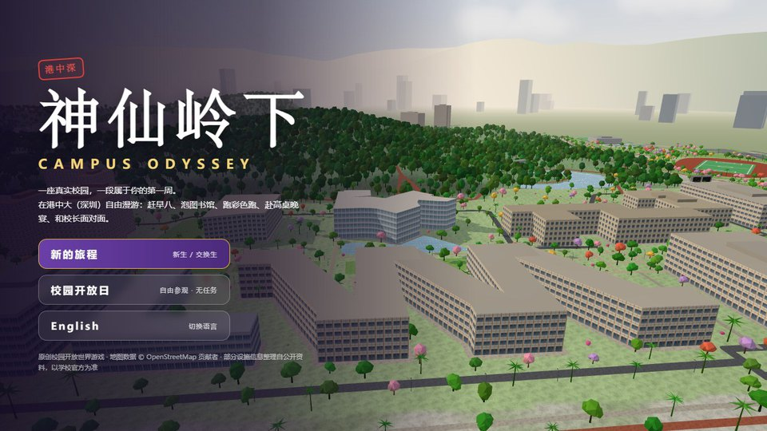

港中大（深圳）· 数字校园
同一座真实校园，两种打开方式。One real campus, two ways in
交互模型
3D 校园Interactive 3D Campus
上园、中园、下园与神仙湖的三维模型。点选楼宇看介绍，拖动时间轴看日照与夜景，或者跟着导览走一圈。
打开模型
开放世界游戏神仙岭下Campus Odyssey
在真实的校园地图上自由漫游，以新生的身份度过第一周：赶早八、泡图书馆、逛社团招新、赴高桌晚宴。
开始游戏同一座真实校园，两种打开方式。One real campus, two ways in
上园、中园、下园与神仙湖的三维模型。点选楼宇看介绍，拖动时间轴看日照与夜景，或者跟着导览走一圈。
打开模型
开放世界游戏在真实的校园地图上自由漫游，以新生的身份度过第一周：赶早八、泡图书馆、逛社团招新、赴高桌晚宴。
开始游戏